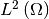

ナビゲーション
次へ
理工系新入生のための線型代数入門--微分積分的観点から
»
理工系新入生のための線型代数入門–微分積分的観点から
著者情報
著者:
相転移P
出版社:
相転移プロダクション
無料メルマガ登録:
http://phasetr.com/members/formadd/
サイト:
http://phasetr.com
Contents
はじめに
自己紹介
活動目的
有料出版の理由
本の内容
Introduction
What is linear algebra?
Abstract definition of vectors
Examples of linear spaces
Examples of finite, but higher dimensional spaces than three
Function as a vector
Function spaces: examples of infinite dimensional spaces
Linear maps, functionals
Eigenvalues, eigenvectors
Mathematical application of linear algebra
Physical application
Linear algebra and statistics
Linear algebra and computer science
Integration
Let’s define inner products!
Axiom for inner products
Examples of inner products
Physics for the space 
Differentiation
Taylor expansion
Unitary representation of a group
Analitical mechanics and quantum mechanics
Physics and representation theory
Variational problem: mixture of differentiation and integration
Examples of variational problems
Mathematical formulation: functionals, linear operators
References